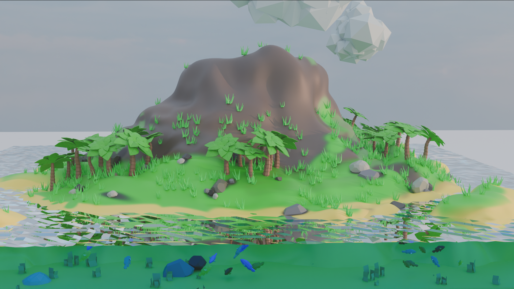

Concept Art · Animation Low-Poly
ÎLE
Scroll pour explorer ↓
ÎLE
FLOTTANTE
Scroll pour explorer ↓
Low-poly, haut niveau.
La stylisation comme langage.
Rôle
Modélisation · Animation · Lighting
|
Durée
2 Semaines
|
Outils
Blender
|
Année
2025
01
Le Concept
Une île tropicale stylisée en low-poly animée — végétation, eau, nuages. Chaque élément naturel coexiste dans une esthétique intentionnellement simplifiée mais expressive.
Vue d'ensemble · Style low-poly assumé
02
L'Approche Technique
Les matériaux et l'éclairage ont été travaillés pour maintenir une esthétique cohérente. La caméra effectue un mouvement contemplatif qui révèle progressivement l'île — une mise en scène minimaliste mais efficace.
Animation caméra · Mouvement contemplatif
03
Le Résultat
Une animation qui prouve qu'un style graphique simple peut être riche en émotion — exploration de l'animation de caméra et de la composition stylisée.
Animation Finale · Rendu complet
2 sem.
De travail
5 éléments
Naturels
1 île
Qui flotte
100%
Low-poly